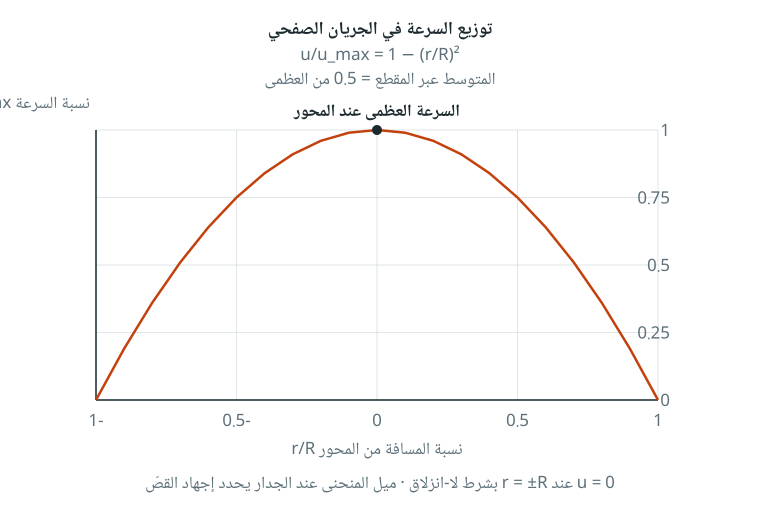

الجريان الصفحي
Laminar Flow
نمط جريان تسيل فيه طبقات المائع متوازية بلا خلط عرضي، فتنتقل كمية الحركة بالتصادم الجزيئي وحده. مقطعه السرعي قطع مكافئ، متوسط سرعته نصف العظمى، وهبوطه الضغط يتناسب خطيًّا مع السرعة.
الجريان الصفحي نمط يسيل فيه المائع في طبقات متوازية لا تختلط، فتنتقل كمية الحركة بينها بالتصادم الجزيئي وحده. يفرض الجدار شرط لا-انزلاق فتصبح السرعة عنده صفرًا وتتزايد نحو المحور، فيأخذ المقطع شكل قطع مكافئ. يبقى النمط صفحيًّا ما دام رقم رينولدز تحت الحدّ الحرج، ويكون هبوط الضغط متناسبًا مع السرعة الأولى لا مع مربعها.
في الأنبوب الدائري يكون التوزيع u(r) = u_max (1 − r²/R²)، حيث r المسافة من المحور وR نصف القطر. متوسط السرعة عبر المقطع يساوي نصف السرعة العظمى، أي 0.5، وهي النتيجة المستخدمة في حساب التدفق Q = (πR²/2) u_max.
تفسّر معادلة هاغن–بويزي توزيع الضغط: Δp = 8μLQ/(πR⁴). القوة المحرّكة للتدفق تُستهلك في إجهاد القصّ على الجدار، ولهذا يهبط الضغط خطيًّا مع الطول ويشتدّ بقوة مع صغر القطر.
كيف تعمل الظاهرة؟
يبدأ الجريان عند المدخل بمقطع سرعة شبه منتظم، ثم تنمو طبقة حدّية لزجة من الجدار نحو المحور. عندما تلتقي الطبقتان يتحقق الجريان التام النمو ويستقر شكل المقطع على القطع المكافئ. سبب الشكل المكافئ توازن القوى على أسطوانة مائع مجوّفة: فرق الضغط على الطرفين يوازن إجهاد القصّ على السطح الجانبي، فيكون تدرّج إجهاد القصّ خطيًّا مع r، وتكامله يعطي سرعة تربيعية. طول المدخل اللازم يقارب 0.05·Re·D، أي نحو 30 مترًا في أنبوب 25 مم عند Re = 24,900؛ لذلك لا يظهر المقطع المكافئ في الأنابيب القصيرة.
العلاقة بالأرقام
مثال محسوب: ماء عند 20 °م، أنبوب نصف قطره 5 مم وطوله 10 م، وتدفق 1 L/min أي 1.667×10⁻⁵ m³/s. متوسط السرعة 0.212 m/s ورقم رينولدز 2114، أي جريان صفحي. هبوط الضغط Δp = 8 × 1.002×10⁻³ × 10 × 1.667×10⁻⁵ / (π × 0.005⁴) = 680 Pa، أي ما يعادل 68 مليمتر عمود ماء لكل متر طول. مضاعفة نصف القطر إلى 10 مم تخفض الهبوط 16 مرة عند التدفق نفسه، لأن المقام يتناسب مع R⁴.
مفاهيم متقاربة
الخلط الأول: اعتبار الصفحي مرادفًا للبطيء. النمط يحدّده رقم رينولدز لا السرعة المطلقة؛ زيت لزج قد يسيل بسرعة سنتيمترات في الثانية ويكون صفحيًّا، وماء في أنبوب شعري يبقى صفحيًّا بسرعة أعلى. الثاني: اعتبار الصفحي مرادفًا للهدوء؛ قد يكون الجريان صفحيًّا ومتذبذبًا ببطء قرب الحدّ، وقد تكون الطبقة الحدّية صفحية والقلب مضطربًا في آن واحد. الثالث: تعميم المقطع المكافئ على كل جريان صفحي؛ بين صفيحتين متوازيتين يكون التوزيع مكافئيًّا أيضًا لكن متوسط السرعة ثلثا العظمى لا نصفها.
حدود التطبيق
معادلة هاغن–بويزي مشتقّة لسائل نيوتوني في أنبوب أفقي مستقيم مقطع دائري ثابت، جريان مستقر تام النمو وبلا انزلاق. لا تصح في الأنابيب القصيرة حيث يسيطر المدخل، ولا في المقاطع غير الدائرية إلا بقطر مكافئ، ولا عند تغيّر الخواص مع الحرارة على الطول. وفي الجريان النابض يبقى التوزيع مكافئيًّا عند الترددات المنخفضة فقط، وتُضاف كتلة محرّكة فعّالة عند الترددات العالية. أما في الأوساط المسامية فيستبدل القانون بقانون دارسي، وسرعته متوسطة على مقطع أكبر بكثير من مقطع المسام.

| الكمية | القيمة | المصدر |
|---|---|---|
| هبوط الضغط في 10 م من أنبوب 5 مم عند 1 L/min | 680 Pa | [2] |
| رقم رينولدز للحالة نفسها | 2,114 بلا وحدة | [3] |
| نسبة متوسط السرعة إلى العظمى في المقطع المكافئي | 0.5 بلا وحدة | [1] |
| متوسط سرعة الماء في الأنبوب | 0.212 m/s | [2] |
| معامل تخفيض الهبوط عند مضاعفة نصف القطر | 16 مرة | [1] |
المصادر
- 1 University Physics Volume 1 — 14.7 Viscosity and Turbulence — OpenStax. openstax.org/books/university-physics-volume-1/pages/14-7-viscosity-and-turbulence · اطُّلع عليه 2026-11-16
- 2 Water — Dynamic and Kinematic Viscosity — The Engineering ToolBox. www.engineeringtoolbox.com/water-dynamic-kinematic-viscosity-d_596.html · اطُّلع عليه 2026-11-16
- 3 Reynolds Number — The Engineering ToolBox. www.engineeringtoolbox.com/reynolds-number-d_237.html · اطُّلع عليه 2026-11-16
استشهد بهذا المصطلح
الصيغتان مبنيتان من بيانات الصفحة نفسها: العنوان والتاريخ ورابط النسخة المنشورة.
الجريان الصفحي — Laminar Flow. (2026). ديوان المعرفة — انفراد. https://infiradev.com/diwan/terms/laminar-flow.html
@misc{laminar-flow2026,
title = {الجريان الصفحي},
titleaddon = {Laminar Flow},
howpublished = {{ديوان المعرفة — انفراد} — مرجع علمي عربي},
year = {2026},
url = {https://infiradev.com/diwan/terms/laminar-flow.html},
urldate = {2026-11-16},
note = {مراجعة علمية: مراجعة آلية — ديوان المعرفة (روابط المصادر + عقد المحتوى + وجود الرسم) 2026-11-16}
}
راجعه: مراجعة آلية — ديوان المعرفة (روابط المصادر + عقد المحتوى + وجود الرسم) 2026-11-16 · 2026-11-16 · آخر تحديث 2026-11-16